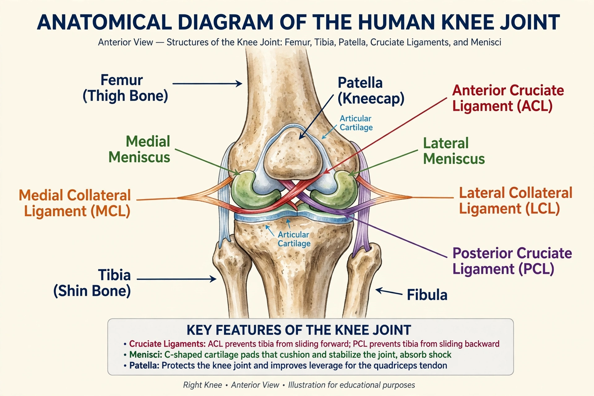

| Knee | |
|---|---|
| Type | Modified hinge synovial joint |
| Bones | Femur, tibia, patella (and fibula, indirectly) |
| Ligaments | ACL, PCL, MCL (tibial collateral), LCL (fibular collateral), patellar ligament |
| Cartilage | Medial and lateral menisci; articular cartilage |
| Movements | Flexion, extension, slight rotation when flexed |

In humans and other primates, the knee joins the thigh with the leg and consists of two joints: the tibiofemoral joint, between the femur and tibia, and the patellofemoral joint, between the femur and the patella (kneecap). It is the largest joint in the human body. The knee is a modified hinge joint, which permits flexion and extension as well as slight medial and lateral rotation when flexed. It is vulnerable to injury — particularly to its cruciate ligaments and menisci in sport — and to osteoarthritis in later life, and it transmits loads of several times body weight during running and stair climbing.
The rounded condyles of the femur rest on the relatively flat tibial plateau; the patella, a sesamoid bone embedded in the quadriceps tendon, glides in the femoral trochlear groove and increases the leverage of the quadriceps. Two crescent-shaped fibrocartilages, the medial and lateral menisci, deepen the tibial socket, distribute load, and absorb shock; the joint surfaces are lined with hyaline articular cartilage, and the whole joint is enclosed in a capsule lined with synovial membrane producing lubricating synovial fluid.
Four principal ligaments stabilise the knee. Inside the joint, the anterior cruciate ligament (ACL) runs from the front of the tibia up and back to the femur, preventing the tibia sliding forward and controlling rotation; the stronger posterior cruciate ligament (PCL) prevents backward displacement. Outside the joint, the medial (tibial) collateral ligament resists forces pushing the knee inward (valgus), and the lateral (fibular) collateral ligament resists outward (varus) forces. The patellar ligament continues the quadriceps tendon from patella to tibial tuberosity and is struck in the knee-jerk reflex test.
The quadriceps femoris extends the knee; the hamstrings (semitendinosus, semimembranosus, biceps femoris) and gastrocnemius flex it; the popliteus "unlocks" the joint by rotating the femur to initiate flexion. At full extension the joint "screws home" — the femur rotates medially on the tibia — producing a rigid, energy-efficient standing posture.
The knee is among the most commonly injured joints in sport. ACL rupture — typically from pivoting or landing — is a season-ending injury for athletes, treated usually by reconstructive surgery with tendon grafts; combined tears of the ACL, MCL, and medial meniscus form the classic "unhappy triad". Meniscal tears cause locking and pain and are managed by partial meniscectomy or repair. Degenerative wear of cartilage causes osteoarthritis, a leading cause of disability, treated by exercise, weight management, analgesia, and ultimately total knee replacement, one of the most successful operations in modern surgery, with over 100,000 performed annually in the UK and over 750,000 in the US. Other conditions include patellofemoral pain ("runner's knee"), Osgood–Schlatter disease in adolescents, bursitis, and gout or septic arthritis within the joint.
The human knee reflects adaptation to habitual bipedalism: an angled femur (bicondylar angle) places the knee beneath the body's centre of mass, and enlarged condyles bear the full body weight on one leg during gait. In quadrupeds, what lay observers call the "knee" of a horse's foreleg is anatomically the wrist (carpus); the true knee (stifle) is in the hind leg, high against the body.